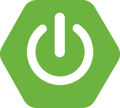

Full-Stack Entwickler
AKSI Bestellverwaltungssystem
Entwicklung eines produktiv eingesetzten Bestellsystems als modularer Monolith mit Spring Boot, Next.js, OpenAPI, PostgreSQL und Keycloak.
Lebenslauf
Full-Stack Entwickler
Full-Stack-Entwickler mit Backend-Fokus auf Java, Spring Boot, PostgreSQL und API-First-Entwicklung. Praktische Frontend-Erfahrung mit React, Next.js und TypeScript.

AKSI Bestellverwaltungssystem
Entwicklung eines produktiv eingesetzten Bestellsystems als modularer Monolith mit Spring Boot, Next.js, OpenAPI, PostgreSQL und Keycloak.
Game Boosting Marketplace
Entwicklung einer Marketplace-Plattform mit Preisberechnung, Chat, Authentifizierung sowie Stripe-, PayPal- und Coinbase-Integrationen.
Coffeetamine Social-Discovery-MVP
Backend-MVP mit Spring Boot, DDD-Modulen, OIDC, RabbitMQ und privacy-first Geo-Discovery.
Brainlab, Webcapitan, Quarzwerke GmbH
Koordination internationaler Web-Projekte, technische Dokumentation, Release-Planung und Leitung eines 25-köpfigen Delivery-Teams.
Akademia Ekonomiczno-Humanistyczna w Warszawie
Militärakademie Odesa